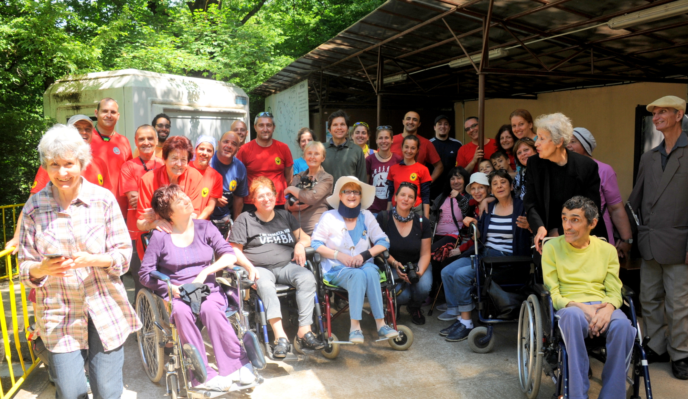
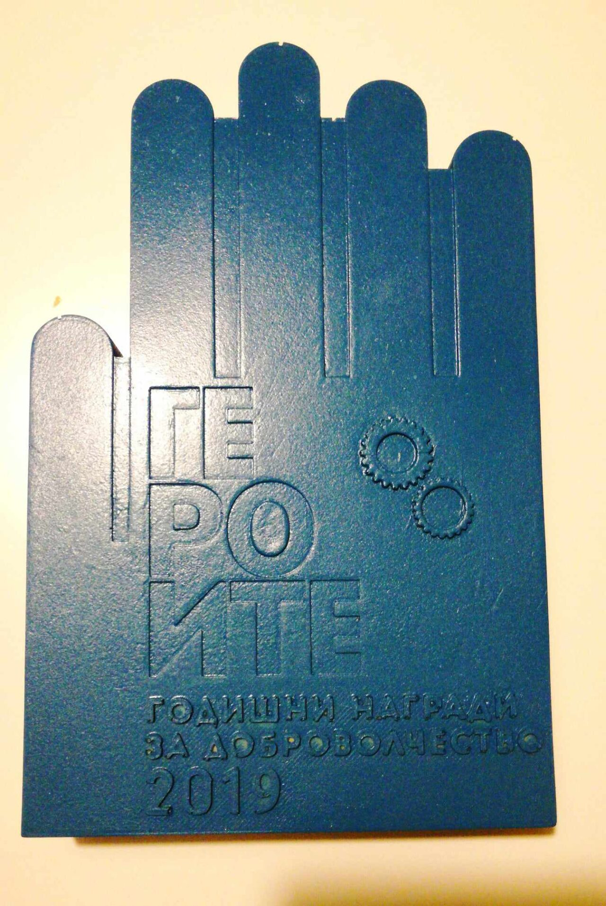

Как започна
всичко
Създадохме фондация „Ела и ти“ в подкрепа на хората в неравностойно положение. Започнахме с изработване на красиви изделия от отпадъци, като включвахме активно самите хора — ръцете им, идеите им, времето им.

Пътят до първата пътека
Част от инициативите ни са посещения на труднодостъпни места за хора със затруднена или невъзможна подвижност — с помощта на специализиран екип от Планинско спасяване – Пазарджик, Пещерно спасяване и пещерни клубове от страната.
До момента направихме възможно посещението на пещерите „Съева дупка“ и „Проходна“ за 20 души, които доскоро не можеха и да мечтаят за това. Всяка наша инициатива е свързана и с изграждането на адаптирана атракционна система — например издигане с въже.
Така помагаме на тази група хора да се докоснат до непознатия свят в природата, закътан дълбоко в земята, и — напускайки до болка познатите стени на дома — да прекарат един различен ден. Събитията ни се радват на интереса на медиите и на доброволци, търсещи нови предизвикателства.
Инициативите са възможни с участието на професионалисти в сферата на пещерното и планинското спасяване със специализиран инвентар. За придвижването на един човек е необходим екип от шестима. Подсигуряването на специализиран транспорт също е голямо предизвикателство.
Средствата ни трябват за носилки, въжета, техника и транспорт — за да има следващо място, следваща дата и още хора, които да кажат „вземете ме и мен“.
Отчетност
Прозрачността не е формалност. Ето документите за дейността и финансите ни, подредени по години — за всеки, който иска да види какво правим с доверието.
2025
2024
Не си сигурен кой документ ти трябва? Пиши ни — ще ти покажем къде да гледаш.

TimeHeroes · Годишни награди за доброволчество
Призът „Героите“
През 2019 г. заедно с екипите на „Пещерно спасяване“ и „Планинско спасяване – Пазарджик“ спечелихме приза за смел подход „Героите“.
Наградата е за екипа — спасители, доброволци и хората, които първи се съгласиха да тръгнат с нас.
Искаш да си част от следващата пътека?
Има работа за ръце, за време и за хора, които носят.